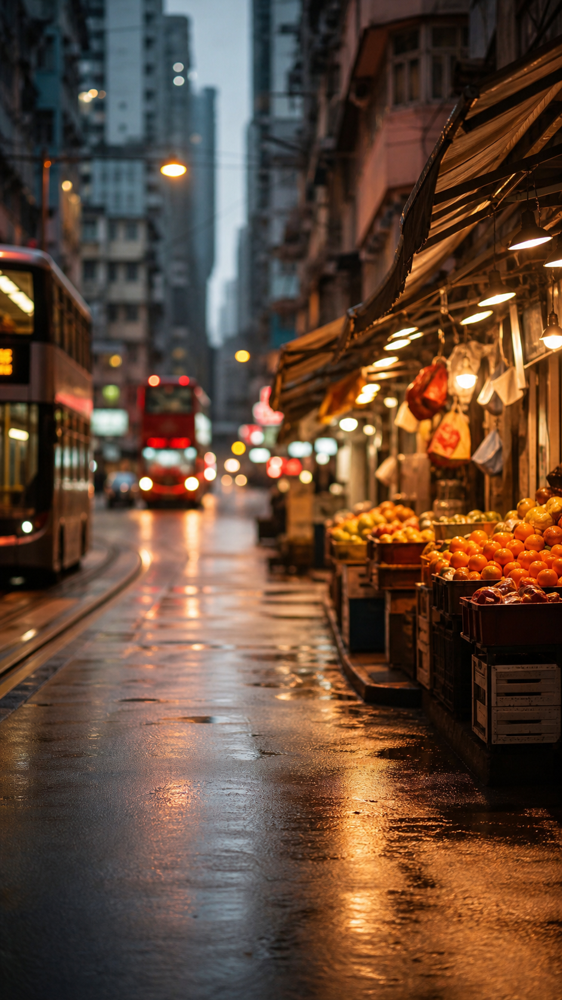

Each version keeps the same core behavior: tap once for photo, long-press for a
10-second video, show bilingual learning controls, and use glass-like iOS-inspired
materials across buttons, tags, and tabs.
01
Clarity Glass
Bright, friendly, beginner-first. The cleanest option for broad consumer appeal.

9:415G · 82%
CantonScene
Fruit stall
生果檔 · sang1 gwo2 dong3
Cup
杯 · bui1
ReadyTap to capture · Hold for video
02
Night Lens
Premium, cinematic, high contrast. Feels closer to a serious camera app.
9:415G · 82%
Scene mode
Detected scene
A busy Hong Kong street market條街好熱鬧，有人喺度買生果。
10s
03
Learning Lens
More educational at first glance, with object labels always visible on the camera.
9:415G · 82%
Today’s focus
Street Cantonese
Signboard招牌 · ziu1 paai4
Fruit生果 · sang1 gwo2
Person buying fruit買緊生果 · maai5 gan2 sang1 gwo2
MoreLess
04
Pro Capture
Functional, app-like, and efficient. Best if CantonScene leans into creator tools.
9:415G · 82%
Live recognition
Tea cup茶杯 · caa4 bui1
Street stall街邊檔 · gaai1 bin1 dong3
05
Aura Study
Soft, calm, and lifestyle-oriented. Best if you want learning to feel gentle.